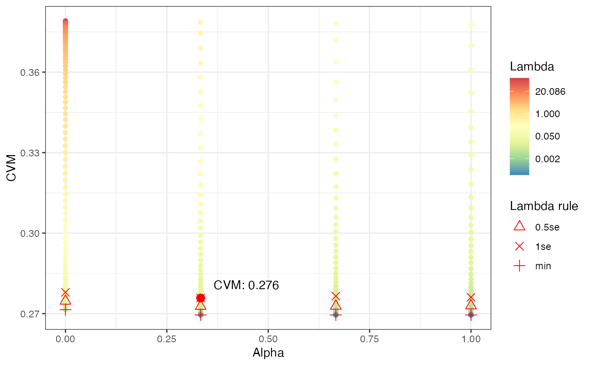
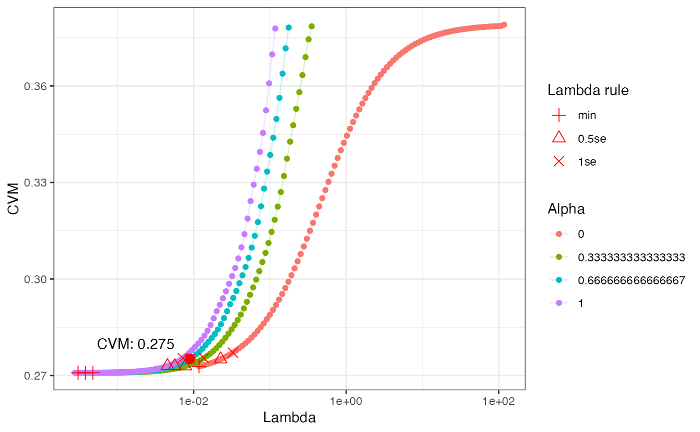
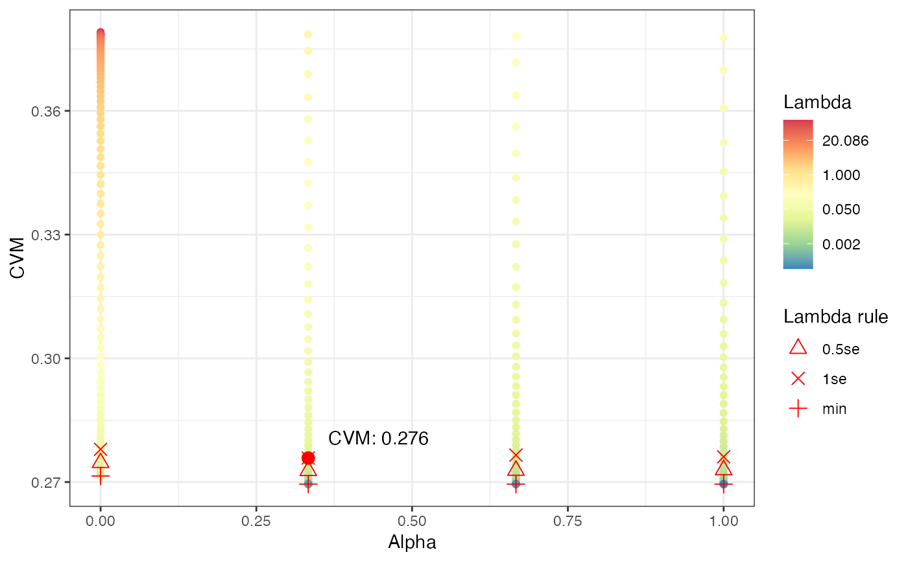
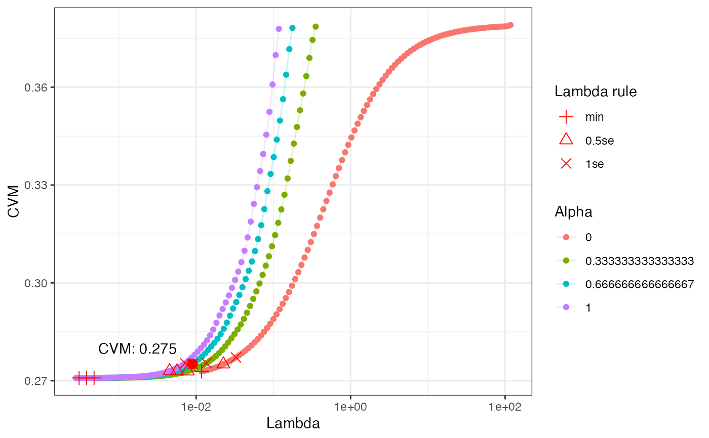

Reguarized logistic regression
reg_logreg.RdStandardized interface for self-tuning regularized logistic regression.
reg_logreg(x, y, folds = 5, alpha_n = 3, cost = "mse", lambda = "1se")Arguments
- x
Data frame with features.
- y
Binary vector indicating outcome event.
- folds
Number of folds to use for CV tuning
- alpha_n
Number of alpha values to sample for CV tuning
- cost
Cost measure to use, see
glmnet::cv.glmnet()- lambda
Decision rule to pick lambda, one of "min", "1se", "0.5se"
Details
Tuning is performed using cross-validation with glmnet::cv.glmnet().
Both lambda and alpha values are tuned. The lambda values are left to the
model default and a uniform grid of alpha values is used. The lambda value
is picked with glmnet::cv.glmnet()'s more robust 1se value (i.e. not the
absolute minimum, but closest value within 1 SD of the minimum value). Then
the globally optimum alpha value is picked.
See also
Other Other base models:
logistic_reg_featx(),
logistic_reg()
Examples
library(modeldata)
data(credit_data)
credit_data <- credit_data[complete.cases(credit_data), ]
mdl <- reg_logreg(credit_data[, setdiff(colnames(credit_data), "Status")],
credit_data$Status,
folds = 5, alpha_n = 4)
# plots to review tuning results
plot(mdl)
 plot(mdl, "alpha")

plot(mdl, "lambda")

preds <- predict(mdl, new_data = credit_data)
head(preds)
#> # A tibble: 6 × 2
#> p_bad p_good
#> <dbl> <dbl>
#> 1 0.237 0.763
#> 2 0.114 0.886
#> 3 0.522 0.478
#> 4 0.243 0.757
#> 5 0.176 0.824
#> 6 0.0721 0.928
plot(mdl, "alpha")

plot(mdl, "lambda")

preds <- predict(mdl, new_data = credit_data)
head(preds)
#> # A tibble: 6 × 2
#> p_bad p_good
#> <dbl> <dbl>
#> 1 0.237 0.763
#> 2 0.114 0.886
#> 3 0.522 0.478
#> 4 0.243 0.757
#> 5 0.176 0.824
#> 6 0.0721 0.928